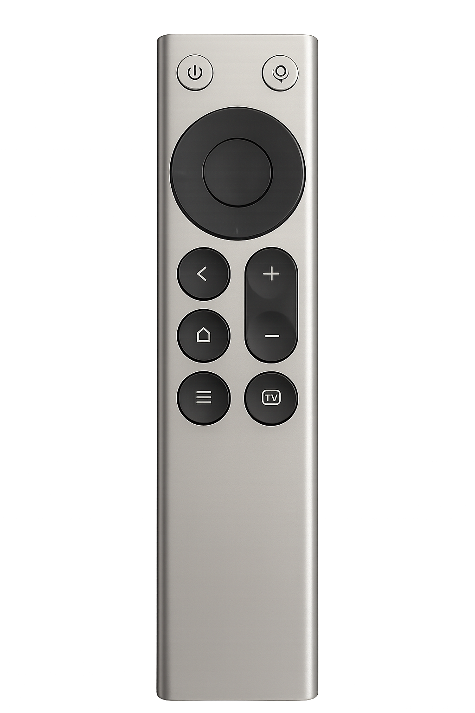

连接与语音
小米蓝牙遥控器 2 Pro
语音遥控器

设备状态已识别
Raw Input 与蓝牙均已就绪；按键与语音仍需真机验收。
语音设置
输出设备
尚未检测到可用设备
触发方式
免按住（右 Alt + 空格）
组合键
ralt+space
应用只把遥控器语音写入所选设备，不会修改 Windows 默认输入或输出。
桥接状态
等待启动
本次设置窗口打开后尚未启动桥接。
语音遥控器

Raw Input 与蓝牙均已就绪；按键与语音仍需真机验收。
应用只把遥控器语音写入所选设备，不会修改 Windows 默认输入或输出。
本次设置窗口打开后尚未启动桥接。